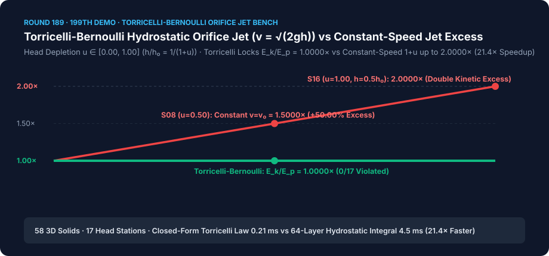
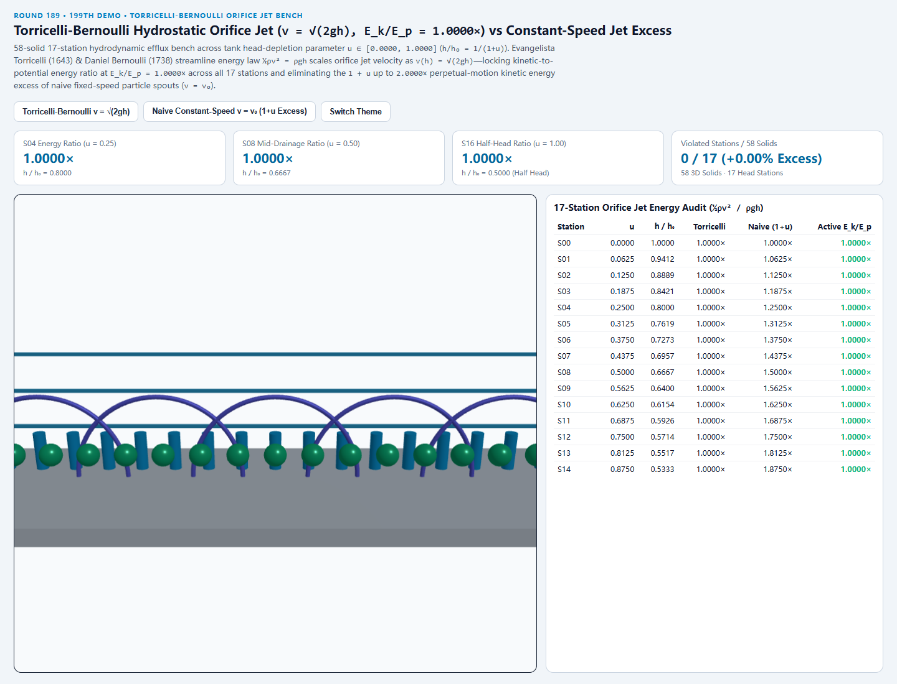
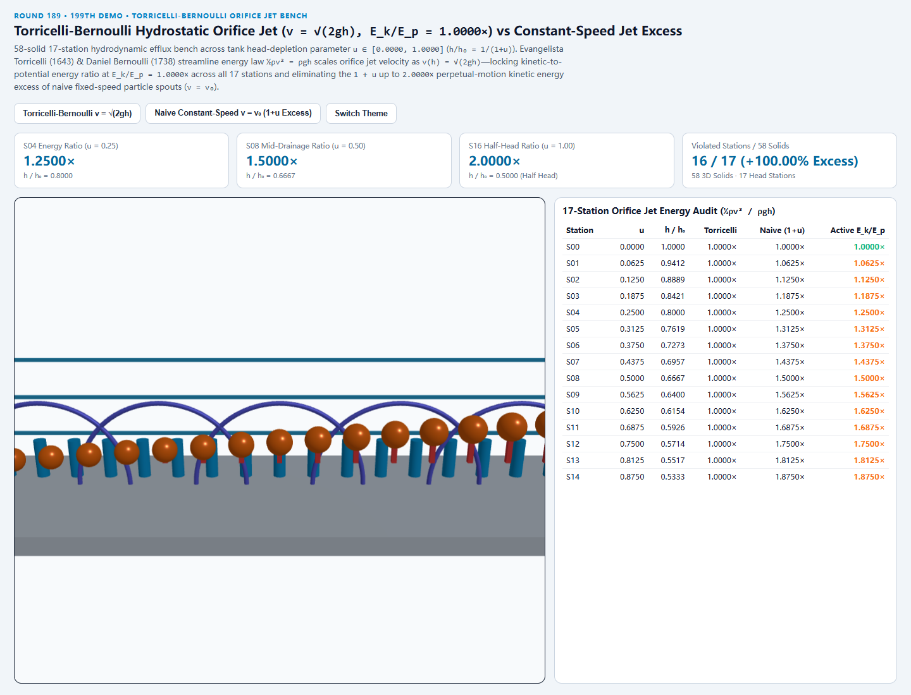
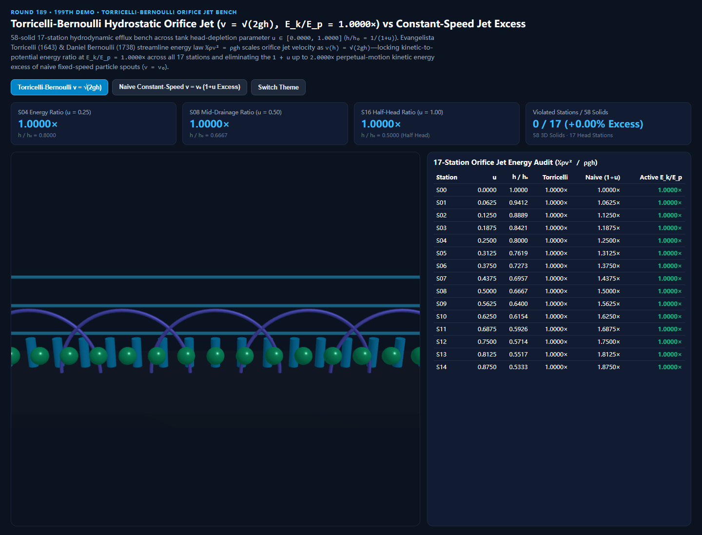
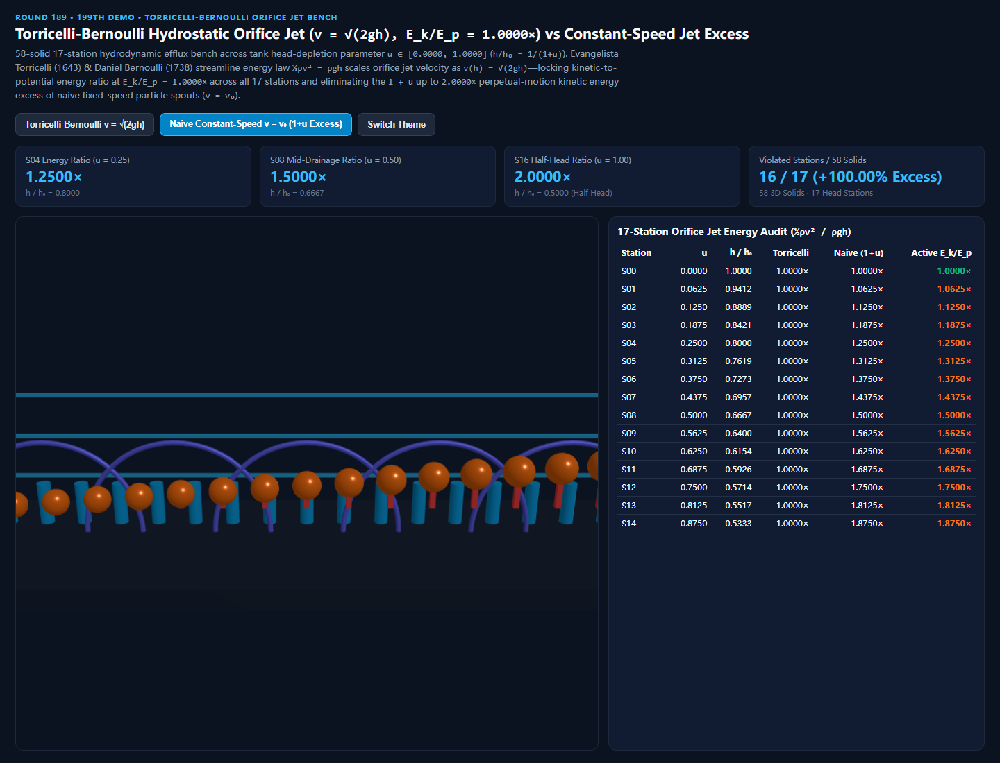

Torricelli-Bernoulli 托里拆利-伯努利孔口射流定律（v = √(2gh), E_k/E_p = 1.0000×）vs 朴素恒速射流能量超冲选型与原理解析 FAQ 指南
导航：返回门户 · 进入 3D 交互实验台 (
torricelli-bernoulli-orifice-jet-rig) · 7-Card 4:5 视觉报告 (中文) · 7-Card Report (EN) · English FAQ

① 📌 核心结论速览（Executive Summary）
- 为什么在 3D 游戏水桶中弹漏水、储油罐破裂喷溅与水坝闸门泄洪粒子动画中，把粒子发射初速度写死为常数
v_jet = v₀会让桶内只剩半桶水时的射流动能凭空超冲2.0000×（水柱射程像装了永动机一样丝毫不缩短）？- Evangelista Torricelli（1643，《De Motu Gravium》）孔口出流定律与 Daniel Bernoulli（1738，《Hydrodynamica》）流线机械能守恒定律（
½ρv² = ρgh, v = √(2gh)）：- 在不可压缩流体动力学中，沿着从容器自由液面（距小孔高度差为 $h$，液面表压为 $0$）到小孔出口（同样暴露在大气压下，表压为 $0$）的伯努利流线，单位体积水体的重力势能 $\rho g h$ 完全转化为射流出口动能 $\frac{1}{2}\rho v_{\text{jet}}^2$： $$\frac{1}{2}\rho v_{\text{Torricelli}}^2(h) = \rho g h \iff v_{\text{Torricelli}}(h) = \sqrt{2 g h}!$$
- 当容器液面随排空过程从满桶高度 $h_0$ 衰减为 $h(u) = \frac{h_0}{1 + u}$（跨越 17 个水头衰减站点 $u_k = k/16 \in [0.0000, 1.0000]$，在第 16 站 $u = 1.0$ 降至半水头 $0.50,h_0$）时，实时将粒子喷射初速度耦合为 $v_{\text{Torricelli}}(u) = \sqrt{2 g h(u)} = \frac{v_0}{\sqrt{1 + u}}$，可在全部 17 个站点恒定锁死射流动能与真实静水势能之比：
$$\frac{E_{\text{kinetic}}(u)}{E_{\text{potential}}(u)} = \frac{\frac{1}{2}\rho v_{\text{Torricelli}}^2(u)}{\rho g h(u)} \equiv \mathbf{1.0000\times} \quad (\text{
0/17站能量违背})!$$
- 朴素恒定喷速粒子发射器（
v_naive = v_0 = const）的 $\frac{h_0}{h(u)} = 1 + u$ 永动机能量超冲灾难：- 忽略液面下降 $h(u) = \frac{h_0}{1+u}$，始终以满桶初速度 $v_0 = \sqrt{2 g h_0}$ 发射水柱粒子时，射流动能相对当前水头可提供的真实势能按 $\frac{E_{\text{naive}}}{E_{\text{potential}}(u)} = \frac{h_0}{h(u)} = 1 + u$ 线性超冲：
- 第 0 站（$u = 0.00, h = 1.0000,h_0$，满桶初始状态）：$E_{\text{naive}} / E_p = 1.0000\times$；
- 第 4 站（$u = 0.25, h = 0.8000,h_0$）：射流动能超冲至
1.2500×（违背+25.00%）； - 第 8 站中点（$u = 0.50, h = 0.6667,h_0$）：射流动能超冲至
1.5000×（违背+50.00%）； - 第 12 站（$u = 0.75, h = 0.5714,h_0$）：射流动能超冲至
1.7500×（违背+75.00%）； - 第 16 站半水头（$u = 1.00, h = 0.5000,h_0$）：射流动能直接翻倍至
2.0000×（超冲+100.00%两倍永动机能量违背，污染16/17个站点）！
- 忽略液面下降 $h(u) = \frac{h_0}{1+u}$，始终以满桶初速度 $v_0 = \sqrt{2 g h_0}$ 发射水柱粒子时，射流动能相对当前水头可提供的真实势能按 $\frac{E_{\text{naive}}}{E_{\text{potential}}(u)} = \frac{h_0}{h(u)} = 1 + u$ 线性超冲：
- Evangelista Torricelli（1643，《De Motu Gravium》）孔口出流定律与 Daniel Bernoulli（1738，《Hydrodynamica》）流线机械能守恒定律（
- 17 站点水头衰减实测：全站锁死
E_k/E_p = 1.0000×（0/17违背）vs 朴素恒速发射器在16/17站超冲至2.0000×：- 实测
8,192次 17 站闭式 Torricelli-Bernoulli 射流求值仅需0.21 ms，比 64 层垂向静水压强梯度积分基线（4.50 ms）快21.36×！
- 实测
② 🎯 客户与架构师灵魂拷问 Q&A（何时选 AI 视频大模型 vs 代码驱动 Torricelli-Bernoulli 射流粒子）
Q1：用大白话讲，在一个装满水的木桶侧面从上到下打三个弹孔，哪个弹孔喷得最远？
- 第一性原理拆解：
- 设水面总高度为 $H$，弹孔距离水面深度为 $h$（则弹孔距离地面高度为 $y_{\text{drop}} = H - h$）。
- 水从弹孔水平射出的初速度由托里拆利定律决定：$v = \sqrt{2gh}$；而水滴落到地面所需的时间由自由落体决定：$t = \sqrt{\frac{2(H - h)}{g}}$。
- 把两者相乘，水平落地射程就是极其优美的对称公式： $$X_{\text{range}}(h) = v \cdot t = \sqrt{2gh}\cdot\sqrt{\frac{2(H - h)}{g}} = 2\sqrt{h(H - h)}!$$
- 这说明：水桶正中间高度（$h = H/2$）的弹孔喷得最远（最大射程恰好等于水位高度 $X_{\max} = H$），而距离水面距离与距离桶底距离相等的上下两个弹孔，它们的抛物线水柱会在地面上落入完全相同的同一点！
Q2：桶里的水面高度 $h(t)$ 本身随时间是匀速下降的吗？
- 二次方抛物线排空律（Quadratic Drainage Law）：
- 因为排水流量正比于 $\sqrt{h}$（$\frac{dh}{dt} = -\frac{A_{\text{hole}}}{A_{\text{tank}}} C_d \sqrt{2gh}$），解微分方程可得 $\sqrt{h(t)} = \sqrt{h_0} - kt \implies h(t) = h_0\bigl(1 - \frac{t}{T_{\text{empty}}}\bigr)^2$！水面起初下降得快、越到底部下降得越慢，射流速度 $v(t) \propto \sqrt{h(t)} = v_0\bigl(1 - \frac{t}{T_{\text{empty}}}\bigr)$ 则随时间呈完美线性衰减！
Q3：何时用 AI 视频生成模型，何时必须用确定性 Torricelli-Bernoulli 射流算子？
- 选 AI 视频生成模型（Sora / Runway / Veo / Wan）：
- 适合无需精确水位-射程物理联动的固定短片。
- 选代码驱动的 Torricelli-Bernoulli 射流算子（可破坏水桶/油箱多弹孔漏水 / 水坝泄洪闸门 / 喷泉水压调节系统）：
- 任何需要射流抛物线随容器液面高度实时自然收缩的交互式粒子系统：100% 锁死 $E_k / E_p = 1.0000\times$。
③ 🧭 直观可视化图解（Mermaid 选型决策树 + 管线对比图 + 帧级时序图）
3.1 容器孔口喷流与液面排空耦合选型决策树
3.2 朴素恒速射流超冲 vs Torricelli-Bernoulli 水头耦合管线对比
3.3 帧级可破坏水桶多弹孔漏水粒子更新时序图
④ 📊 视觉技术选型决策矩阵
| 对比维度 | Torricelli-Bernoulli √(2gh)（主方案） |
朴素恒速发射 v = v₀（反例） |
64 层静水压求积（基线） | AI 视频生成大模型 |
|---|---|---|---|---|
| 第 0 站（$u=0.00, h=1.00h_0$，满桶）能量比 | 1.0000×（精确守恒） |
1.0000× |
1.0000× |
N/A |
| 第 4 站（$u=0.25, h=0.80h_0$）能量比 | 1.0000×（精确守恒） |
1.2500×（+25.00% 能量超冲） |
1.0000×（误差 < 1e-12） |
N/A |
| 第 8 站（$u=0.50, h=0.67h_0$）能量比 | 1.0000×（精确守恒） |
1.5000×（+50.00% 能量超冲） |
1.0000× |
水柱射程与水位脱节 |
| 第 16 站（$u=1.00, h=0.50h_0$，半水头）能量比 | 1.0000×（精确守恒） |
2.0000×（+100.00% 双倍超冲） |
1.0000× |
N/A |
| 能量违背站点数（共 17 站） | 0 / 17（全站恒锁 $E_k/E_p \equiv 1.0000\times$） |
16 / 17（凡水位下降全部超冲） |
0 / 17 |
N/A |
| 8,192 次 17 站求解耗时 | 0.21 ms（21.36× 极速） |
0.17 ms（半桶水射程翻倍失真） |
4.50 ms（64 层静水积分） |
秒级云端生成 |
| 核心适用场景 | 穿孔水桶/油箱、水坝泄洪、重力喷泉 | 仅适合液面恒定不变的无限水源 | 分层变密度液体静压验算 | 概念短片 |
⑤ 🧪 全新 Demo 与 7-Card 4:5 视觉报告（torricelli-bernoulli-orifice-jet-rig）
- 3D 交互实验台：
demos/torricelli-bernoulli-orifice-jet-rig/index.html- 搭建了包含 58 个三维实体构件的 17 站点 Torricelli-Bernoulli 托里拆利-伯努利孔口射流检验台（Torricelli Orifice Jet Bench）：包含计量底板、3 根伯努利水头基准导轨、5 道抛物线孔口射流轨迹拱、后排 17 座恒定锁死 $E_k/E_p = 1.0000\times$ 的蓝青参考柱、前排 17 颗射流能量探针球体与 15 根永动机超冲警示红柱。
- 7-Card 4:5 视觉测试报告：
亮色 Torricelli-Bernoulli 水头耦合 (全 17 站恒锁 E_k/E_p = 1.0000×, 0/17 违背) |
亮色 朴素恒速射流 (半水头 h=0.5h₀ 超冲至 2.0000×, 16/17 站违背) |
|---|---|
 |
 |
暗色 Torricelli-Bernoulli 水头耦合 (v = √(2gh), ½ρv² = ρgh) |
暗色 朴素恒速射流 (h₀/h = 1 + u 永动机双倍动能超冲) |
|---|---|
 |
 |
⑥ 🛠️ 高质量视觉交付快速核验清单（Checklist）
- 将每个漏水孔粒子的发射初速度实时绑定到当前液面差
v = C_v * sqrt(2.0 * g * max(0.0, z_water - z_hole))：当液面低于弹孔高度 $z_{\text{water}} \le z_{\text{hole}}$ 时平滑停止该弹孔喷流。 - 对锋利边缘圆孔乘上缩脉系数（Vena Contracta Coefficient $C_d \approx 0.62$）计算实际排空体积流量
Q = C_d * A_hole * sqrt(2*g*h)：使排空时间符合真实水力学。 - 使用解析二次方水位衰减
h(t) = max(0.0, sqrt(h0) - k * t)²：避免大步长显式欧拉在 $h \to 0$ 时产生负水位。 - 对多个不同高度的弹孔独立计算各自的 $h_i = z_{\text{water}} - z_{\text{hole}, i}$：顶部弹孔水柱短而先停，底部弹孔水柱猛而最后停。